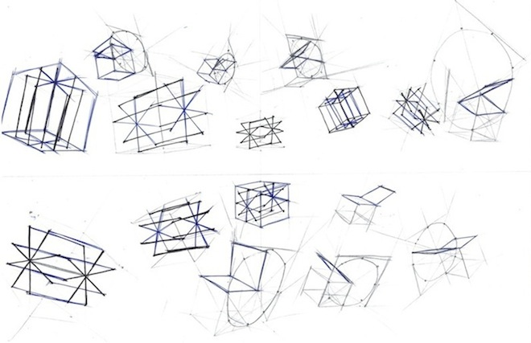
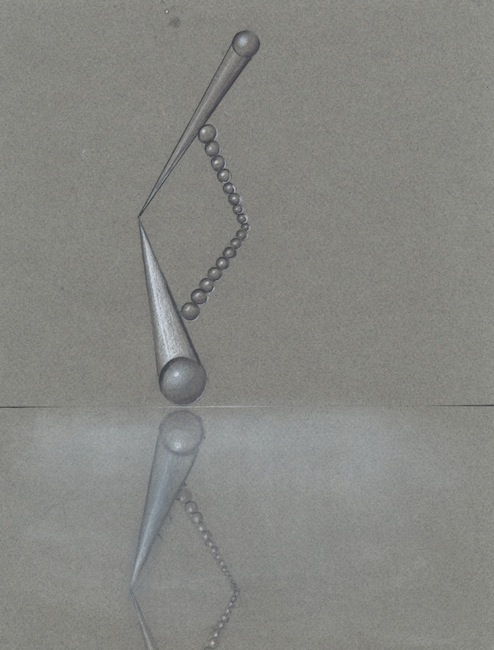
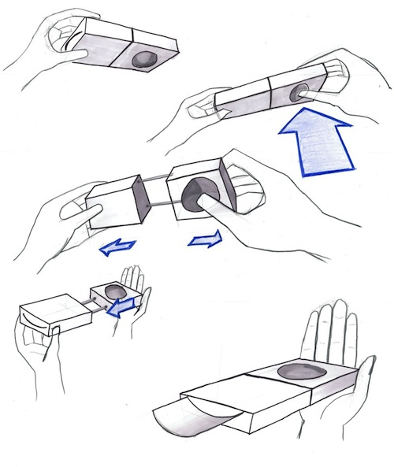
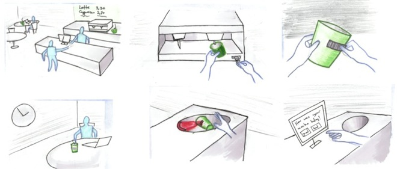

Sketching
Visual Design, 2011
Methodology of Visualization taught how to produce not-necessarily-pretty but believable sketches to convey an idea in a short amount of time. All the projects are individual work.
This is a pantograph sketched on gray paper. The 3D effect is made using white pastel and gray markers in 10 shades.
Hands in this figure show a hypothetical object's use. This project made me recognize the value of hands to convey usage.
This project studies interaction between humans and the surroundings in an action sequence.
